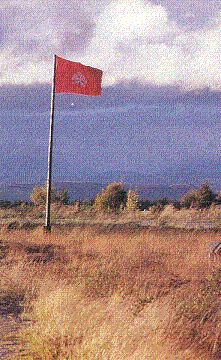

Cullodens Harvest
A modern lament by Alastair McDonald (born 1941)
16th April 1746
Tune
Sequenced by Christian Souchon


|
1 'Twas love of our prince (1) drove us to
Drumossie
,
2. The
Campbell
and
McFall
did the work of the English.
3. None other than children are left to the women,
(1) Denying any encroachment of psychology or sentimentality on History, most modern writers -the genial author of the docu-drama "Culloden", Peter Watkins, inclusively (see video below)- , repel this explanation for the indestructible and loyal support the young Prince enjoyed in the Highlands of Scotland. They prefer to assume self-interested ulterior motives of economic or social kinds in the Clan chiefs and sheeplike submissiveness - if not utter stupidity- among clan folks. Alastair McDonald (born 1941) is a Scottish banjo-playing folk-jazz musician, famous for his recordings of Jim McLean 's folk songs. |
Refrain:
Moisson de Culloden! Un vent glacial qui mord. Le feu adverse embrase Culloden et y sème, Le deuil, l'effroi, la mort.
1 Vers
Drumossie
l'amour du Prince(1) nous menait.
2. Les
Campbell
, les
McFall
se firent leurs valets.
3. Les femmes désormais n'ont plus que leurs enfants
(1) Niant toute intrusion de la psychologie ou de la sentimentalité dans le domaine de l'Histoire, nombre d'écrivains modernes -y compris le génial auteur du reportage "Culloden", Peter Watkins (cf. video, infra) -, rejettent cette explication du loyal et indéfectible soutien dont bénéficia le jeune Prince dans les Hautes Terres d'Ecosse. Ils préfèrent invoquer d'égoïstes arrière-pensées de nature économique ou sociale chez les chefs des Clans et le suivisme moutonnier, sinon la stupidité de leurs sujets.
|
 Chorus:
Chorus:
The hero of Culloden: William Augustus, Duke of Cumberland (1721-1765)
|
He was born on 15th April 1721 as the third son of King George II.
He was created Duke of Cumberland in 1726. A soldier by profession, he was commander of the allied forces in the War of the Austrian Succession (1740-48). He was defeated by Maurice de Saxe at the Battle of Fontenoy on 11 May 1745.
He was recalled to England to oppose the invasion of England of the
Jacobite forces under Charles Edward Stuart, the Young Pretender and
defeated the Scots at the Battle of Culloden Moor near Inverness on
16 April 1746, at which about 1,000 Scots died. He wrote his orders
after the battle "No quarter", on the back of a playing card (the nine
of diamonds - still known as the 'curse of Scotland'), which brought
him the epiteth "Butcher" Cumberland.
Cumberland then returned to the European theatre of war. In July 1747
he lost the Battle of Lauffeld to Saxe. During the Seven Years' War
(1756-63), he was defeated by the French at the Battle of Hastenbeck
in July 1757 and was dismissed by his father
|
Né le 15 avril 1721, le troisième fils du Roi Georges II,
fut fait Duc de Cumberland en 1726. Soldat de métier,
il commandait les forces alliées lors de la Guerre de Succession
d'Autriche (1740-48) et fut vaicu par Maurice de Saxe à la
bataille de Fontenoy le 11 Mai 1745.
Il fut rappelé en Angleterre pour s'opposer à son invasion par les
forces Jacobite de Charles Edouard Stuart, le Jeune Prétendant et
vainquit les Ecossais à la bataille de Culloden près d'Inverness, le
16 avril 1746, où périrent près de 1,000 Ecossais. Il rédigea son
ordre du jour après la bataille "Pas de quartiers", au dos d'une carte
à jouer (le neuf de carreau - encore appelée 'malédiction de
l'Ecosse'), ce qui lui valut le surnom de "Cumberland le Boucher".
Puis Cumberland rejoignit les champs de bataille sur le continent.
En juillet 1747 il perdit la bataille de Lawfeld contre le Maréchal de Saxe. Pendant
la Guerre de Sept Ans (1756-63), il fut battu par les Français à
Hastenbeck en juillet 1757 et renvoyé par son père.
|
Peter Watkin's 1964 controversial docu-drama on the Battle of Culloden (2 excerpts)